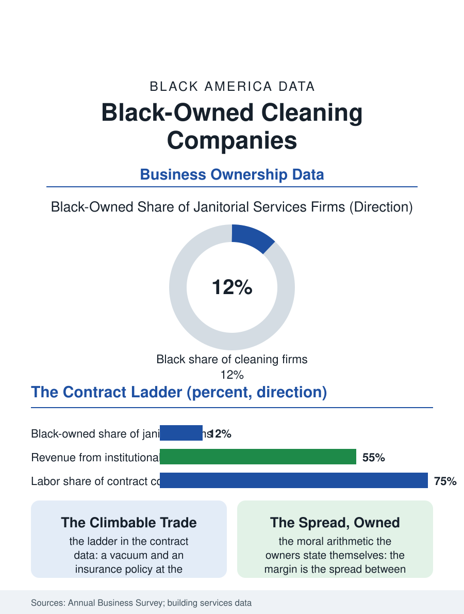

Black Business
The Night's Owners: Black-Owned Cleaning Companies
The vacuum-to-national-portfolio ladder is the business section's cleanest climb, run on institutional contracts and the night crew's labor. The cleaning file.

Commercial cleaning is the small business economy's largest quiet tier: the janitorial contract, won building by building, employs the night file's workforce and enriches a class of Black-owned firms whose largest members run national operations with thousands of employees, a scale almost invisible outside the trade. The business census counts Black-owned janitorial firms in the thousands. This article reads the cleaning companies file.
The Contract Ladder
The industry's structure is the file's lesson in how a low-barrier trade builds real firms: the entry contract, the single office or the small building serviced by the owner and a crew of two, requires a vacuum, a license, and the insurance the property manager demands, a capital threshold the wage worker's savings can cross, and the ladder above it, the multi-building route, the institutional contract, the airport and hospital systems' multi-year awards, is climbable on performance and bonding in increments the firm's cash flow finances, so that the janitorial file contains, at its top, Black firms of genuinely national scale, founded within living memory by the men and women who pushed the first vacuum, their growth the business section's cleanest refutation of the claim that the low-barrier trades cap their owners at subsistence. The public and institutional market is the ladder's main rail: the federal and municipal janitorial contracts, allocated through the small business and disadvantaged business programs whose certification the firm must hold and defend, supply the multi-year revenue the bonding and the payroll require, and the bid file's discipline, the labor hours estimated to the decimal against the incumbent's price, is the firm's core competence, labor being nearly the whole of the contract's cost. The green cleaning certification and the infection-control credentials of the health care contracts add the ladder's newest rungs, the firm's training budget converting the crew's experience into the documented competencies the institutional bid now scores, another case of the paperwork becoming the product's proof.
The Night's Workforce, Owned
The cleaning firm's workforce is the night file's own, and the Black-owned firm's position in that file has a distinctive moral arithmetic the owners articulate themselves: the firm sells the labor of the community's night workers to the buildings they clean, and its margin is the spread between the contract's price and the crew's wage, a spread the firm's better practitioners narrow deliberately, the union contracts and the living wage commitments of the institutional clients supplying both the pressure and the revenue to do so. The industry's labor standards are the janitorial file's standing fight, the misclassification of the crew as contractors and the subcontracting chains that dilute the wage's accountability being the practices the worker centers and the regulators pursue, with the established Black firms, their certifications auditable and their payrolls formal, positioned on the enforcement side of the line the informal operator underbids from. The pandemic repriced the trade's status publicly, the disinfection protocols making the cleaner the building's health officer in the tenants' eyes for a season, and the contract rates' subsequent negotiation recorded how much of the repricing the owners could keep.
From the Vacuum to the Portfolio
The cleaning companies file closes on the ladder's top and its lesson for the whole business section: the janitorial firm is the proof that the ownership economy's decisive variables are not the glamour of the trade but the contract's structure, the recurring revenue, the low capital threshold, the institutional customer, and the owner's willingness to sell a service the buyer would rather not think about, at a quality the buyer cannot ignore. The succession file is correspondingly healthy: the route-based firm with its contracts is among the most saleable of service businesses, and the consolidation of the building services industry, the national platforms acquiring the regional firms, has reached the Black firm's door with the private equity offers of the plumbing file's pattern. The census counts the firms in the thousands and the largest in the trade's own rankings. The file's last entry is the night building's: the lights on the empty floors, the crew at work under a name on the contract that the tenants never read, a name that began, in the file's repeated founding story, with one person's vacuum and one building's trust, which is the whole American small business argument, cleaned and buffed and still standing at dawn.
More in Black Business
Black-Owned Businesses: Counts, Receipts, and the Representation Gap
About 161,000 Black-owned employer firms and three million solo ventures: how the Census Bureau counts Black business ownership, where firms concentrate, and the gap between population share and business share.
Black Median Net Worth: The Wealth Gap in Federal Reserve Data
The Federal Reserve puts Black median family net worth at $44,900, against $285,000 for White families — about 16 cents on the dollar. The widest gap in economic data.
Black Buying Power: The $1.8 Trillion Consumer Economy
Black buying power is estimated at about $1.8 trillion — larger than the economy of most nations. What the figure measures, who produces it, and what it buys.
Source: U.S. Census Bureau, Annual Business Survey for janitorial services; Building Service Contractors Association International data.